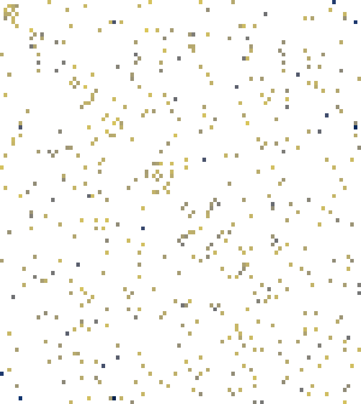

The algebraic closure, scalar projection, and invariance results of the spatial exposure-adjustment model are machine-checked in Lean 4 with Mathlib.
Abstract
Spatial asset-pricing models take the structure of inter-firm interaction as given. We infer that structure from firms' information environments using language-model representations. Each firm is represented as a distribution of news-article embeddings, and a target-anchored Wasserstein barycentric reconstruction selects, for every firm, the weighted combination of other firms whose information footprints jointly reconstruct its own. The resulting directed peer field enters a quadratic exposure-adjustment model in which the spatial coefficient indexes alignment with information peers relative to stand-alone exposure. Using fields built from 2018-2022 news and frozen before 2023-2026 returns, we find that the constructed field organizes cross-sectional return dependence beyond the Fama-French five factors and momentum and raises the held-out mean Gaussian quasi-log score relative to a matched factor-only model. Because factor betas are unchanged, the gain lies in residual covariance. The field outperforms pairwise distance weighting and equal weighting of the same peers, and remains incrementally informative beside persistent news co-mentions under the primary factor-conditioned specification. Linear and quadratic transport generate nearly identical peer-return signals and equivalent held-out predictive performance. The barycentric-proximity ordering persists across alternative embedding models, and a pre-period encoder preserves the held-out advantage under the primary specification. Language-model representations thus serve as a measurement instrument for latent inter-firm information structure in capital markets.
Problem
Spatial asset-pricing models usually take the inter-firm interaction matrix as given, from geography, industry, or news co-mentions, instead of measuring it. The paper aims to infer that structure from firms' information environments.
Approach
Each firm is represented as a distribution of language-model embeddings of its news articles. Optimal transport aligns a target firm's articles with each candidate peer's. A target-anchored Wasserstein barycentric reconstruction then picks convex peer weights, giving a directed, row-stochastic, zero-diagonal interaction field. This field enters a quadratic exposure-adjustment model that yields a spatial autoregression in returns. The algebraic closure, projection, and invariance results are machine-checked in Lean 4 with Mathlib.

Figure 5: Illustrative barycentric interaction field from the target-anchored Wasserstein barycentric reconstruction. Each row is the actual leave-one-out solution W^{\flat}_{i\cdot} to ( 2 ) over the frozen 2018–2022 article clouds: weights are nonnegative, sum to one, and assign zero self-weight. The heat map shows each target’s five largest actual coefficients without renormalizing them; the re
Results
Fields are built from 2018–2022 news on 100 Nasdaq-100-based firms and frozen before evaluation on 2023–2026 returns. Relative to a Fama–French five-factor-plus-momentum model, they add residual-covariance information and raise the held-out quasi-log score. They also outperform pairwise-distance and equal-weight peer fields. Linear and quadratic transport perform nearly identically.
Model
rho-hat
QLL
QLR p
Held-out gain
Factor only
0.000
205748.31
—
—
Target-anchored W1
0.684
209488.34
0.0005
0.0572 [0.0497, 0.0656]
Target-anchored W2
0.687
209476.03
0.0005
0.0571 [0.0496, 0.0653]
Primary spatial-value comparison under spherical innovations (FF5 + momentum controls)